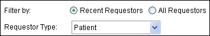
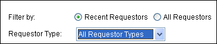

Create a requestor
The system permits you to create patient and non-patient requestors and prompts for information based on the requestor type you specify. More...
You can create requestors by clicking the New Requestor button from these screens:
- The Requestors > Find Requestors form (this method is described below)
- The Select Requestor (or Change Requestor) dialog box
All methods allow you to enter the same data. However, the system enables or disables data entry fields dynamically, depending on the Requestor Type setting. Basically, patient and non-patient fields are mutually exclusive.
To create a patient requestor
- On the Requestors tab, set Requestor Type to Patient. For example:

- Enter the search criteria.
- Click New Requestor. The system displays the Select a Patient to Create New Patient Requestor dialog box.
- Select the patient record that matches the patient requestor you are adding and click Select Patient as Requestor. The system displays the Requestor Information form with patient information populated.
- Enter requestor information and click Save. Continue with "To enter requestor information" below.
To create a non-patient requestor
- On the Requestors tab, set Requestor Type to either All Requestor Types or to a non-patient type. For example:

- Click New Requestor. The system displays the Requestor Information form.
- Continue with "To enter requestor information" below.
To enter requestor information
- On the Requestor Information form, enable the prepayment and/or certification letter flags, when appropriate. You may need to consult your supervisor to determine whether these options should be enabled for the requestor you are creating.
- Perform one of the following:
| - | If you are creating a patient requestor, the system pre-populates the screen with patient information and splits the Name box into Last Name and First Name. It also displays the Patient EPN field if your system is EPN-enabled. Enter any missing patient information, such as the patient's EPN (if displayed), DOB, SSN, Facility, and/or MRN. |
| - | If you are creating a non-patient requestor, select the type of requestor you are adding and enter a name. You can optionally enter the requestor's main address, alternate address, and contact information as desired. |
- Click Save.